OFFICIAL PREVIEW
1010 production files · 64 with thumbnails. Tier: A animated · B rigged · C static · D unsupported. LOCAL RENDER = actual model rendered with three.js; OFFICIAL = creator image.
Kay Lousberg (KayKit) · CC0 1.0 Universal (Public Domain Dedication) · KayKit stylized low-poly; gradient/atlas texture
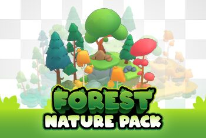
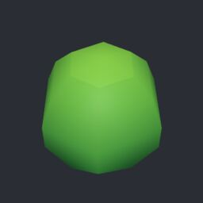
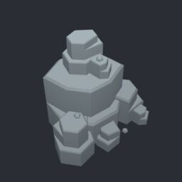
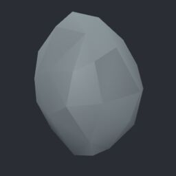
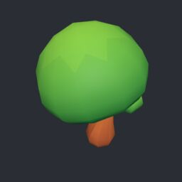
AG-KK-FOREST-0002 · Bush_1_B_Color1 · gltf · C
AG-KK-FOREST-0003 · Bush_1_C_Color1 · gltf · C
AG-KK-FOREST-0004 · Bush_1_D_Color1 · gltf · C
AG-KK-FOREST-0005 · Bush_1_E_Color1 · gltf · C
AG-KK-FOREST-0006 · Bush_1_F_Color1 · gltf · C
AG-KK-FOREST-0007 · Bush_1_G_Color1 · gltf · C
AG-KK-FOREST-0008 · Bush_2_A_Color1 · gltf · C
AG-KK-FOREST-0009 · Bush_2_B_Color1 · gltf · C
AG-KK-FOREST-0010 · Bush_2_C_Color1 · gltf · C
AG-KK-FOREST-0011 · Bush_2_D_Color1 · gltf · C
AG-KK-FOREST-0012 · Bush_2_E_Color1 · gltf · C
AG-KK-FOREST-0013 · Bush_2_F_Color1 · gltf · C
AG-KK-FOREST-0014 · Bush_3_A_Color1 · gltf · C
AG-KK-FOREST-0015 · Bush_3_B_Color1 · gltf · C
AG-KK-FOREST-0016 · Bush_3_C_Color1 · gltf · C
AG-KK-FOREST-0017 · Bush_4_A_Color1 · gltf · C
AG-KK-FOREST-0019 · Bush_4_C_Color1 · gltf · C
AG-KK-FOREST-0020 · Bush_4_D_Color1 · gltf · C
AG-KK-FOREST-0021 · Bush_4_E_Color1 · gltf · C
AG-KK-FOREST-0022 · Bush_4_F_Color1 · gltf · C
AG-KK-FOREST-0023 · Grass_1_A_Color1 · gltf · C
AG-KK-FOREST-0024 · Grass_1_A_Singlesided_Color1 · gltf · C
AG-KK-FOREST-0025 · Grass_1_B_Color1 · gltf · C
AG-KK-FOREST-0026 · Grass_1_B_Singlesided_Color1 · gltf · C
AG-KK-FOREST-0027 · Grass_1_C_Color1 · gltf · C
AG-KK-FOREST-0028 · Grass_1_C_Singlesided_Color1 · gltf · C
AG-KK-FOREST-0029 · Grass_1_D_Color1 · gltf · C
AG-KK-FOREST-0030 · Grass_1_D_Singlesided_Color1 · gltf · C
AG-KK-FOREST-0031 · Grass_1_Mesh · gltf · C
AG-KK-FOREST-0032 · Grass_1_SingleSided_Mesh · gltf · C
AG-KK-FOREST-0033 · Grass_2_A_Color1 · gltf · C
AG-KK-FOREST-0034 · Grass_2_A_Singlesided_Color1 · gltf · C
AG-KK-FOREST-0036 · Grass_2_B_Singlesided_Color1 · gltf · C
AG-KK-FOREST-0037 · Grass_2_C_Color1 · gltf · C
AG-KK-FOREST-0038 · Grass_2_C_Singlesided_Color1 · gltf · C
AG-KK-FOREST-0039 · Grass_2_D_Color1 · gltf · C
AG-KK-FOREST-0040 · Grass_2_D_Singlesided_Color1 · gltf · C
AG-KK-FOREST-0041 · Grass_2_Mesh · gltf · C
AG-KK-FOREST-0042 · Grass_2_SingleSided_Mesh · gltf · C
AG-KK-FOREST-0043 · Rock_1_A_Color1 · gltf · C
AG-KK-FOREST-0044 · Rock_1_B_Color1 · gltf · C
AG-KK-FOREST-0045 · Rock_1_C_Color1 · gltf · C
AG-KK-FOREST-0046 · Rock_1_D_Color1 · gltf · C
AG-KK-FOREST-0047 · Rock_1_E_Color1 · gltf · C
AG-KK-FOREST-0048 · Rock_1_F_Color1 · gltf · C
AG-KK-FOREST-0049 · Rock_1_G_Color1 · gltf · C
AG-KK-FOREST-0050 · Rock_1_H_Color1 · gltf · C
AG-KK-FOREST-0051 · Rock_1_I_Color1 · gltf · C
AG-KK-FOREST-0053 · Rock_1_K_Color1 · gltf · C
AG-KK-FOREST-0054 · Rock_1_L_Color1 · gltf · C
AG-KK-FOREST-0055 · Rock_1_M_Color1 · gltf · C
AG-KK-FOREST-0056 · Rock_1_N_Color1 · gltf · C
AG-KK-FOREST-0057 · Rock_1_O_Color1 · gltf · C
AG-KK-FOREST-0058 · Rock_1_P_Color1 · gltf · C
AG-KK-FOREST-0059 · Rock_1_Q_Color1 · gltf · C
AG-KK-FOREST-0060 · Rock_2_A_Color1 · gltf · C
AG-KK-FOREST-0061 · Rock_2_B_Color1 · gltf · C
AG-KK-FOREST-0062 · Rock_2_C_Color1 · gltf · C
AG-KK-FOREST-0063 · Rock_2_D_Color1 · gltf · C
AG-KK-FOREST-0064 · Rock_2_E_Color1 · gltf · C
AG-KK-FOREST-0065 · Rock_2_F_Color1 · gltf · C
AG-KK-FOREST-0066 · Rock_2_G_Color1 · gltf · C
AG-KK-FOREST-0067 · Rock_2_H_Color1 · gltf · C
AG-KK-FOREST-0068 · Rock_3_A_Color1 · gltf · C
AG-KK-FOREST-0070 · Rock_3_C_Color1 · gltf · C
AG-KK-FOREST-0071 · Rock_3_D_Color1 · gltf · C
AG-KK-FOREST-0072 · Rock_3_E_Color1 · gltf · C
AG-KK-FOREST-0073 · Rock_3_F_Color1 · gltf · C
AG-KK-FOREST-0074 · Rock_3_G_Color1 · gltf · C
AG-KK-FOREST-0075 · Rock_3_H_Color1 · gltf · C
AG-KK-FOREST-0076 · Rock_3_I_Color1 · gltf · C
AG-KK-FOREST-0077 · Rock_3_J_Color1 · gltf · C
AG-KK-FOREST-0078 · Rock_3_K_Color1 · gltf · C
AG-KK-FOREST-0079 · Rock_3_L_Color1 · gltf · C
AG-KK-FOREST-0080 · Rock_3_M_Color1 · gltf · C
AG-KK-FOREST-0081 · Rock_3_N_Color1 · gltf · C
AG-KK-FOREST-0082 · Rock_3_O_Color1 · gltf · C
AG-KK-FOREST-0083 · Rock_3_P_Color1 · gltf · C
AG-KK-FOREST-0084 · Rock_3_Q_Color1 · gltf · C
AG-KK-FOREST-0085 · Rock_3_R_Color1 · gltf · C
AG-KK-FOREST-0087 · Tree_1_B_Color1 · gltf · C
AG-KK-FOREST-0088 · Tree_1_C_Color1 · gltf · C
AG-KK-FOREST-0089 · Tree_2_A_Color1 · gltf · C
AG-KK-FOREST-0090 · Tree_2_B_Color1 · gltf · C
AG-KK-FOREST-0091 · Tree_2_C_Color1 · gltf · C
AG-KK-FOREST-0092 · Tree_2_D_Color1 · gltf · C
AG-KK-FOREST-0093 · Tree_2_E_Color1 · gltf · C
AG-KK-FOREST-0094 · Tree_3_A_Color1 · gltf · C
AG-KK-FOREST-0095 · Tree_3_B_Color1 · gltf · C
AG-KK-FOREST-0096 · Tree_3_C_Color1 · gltf · C
AG-KK-FOREST-0097 · Tree_4_A_Color1 · gltf · C
AG-KK-FOREST-0098 · Tree_4_B_Color1 · gltf · C
AG-KK-FOREST-0099 · Tree_4_C_Color1 · gltf · C
AG-KK-FOREST-0100 · Tree_Bare_1_A_Color1 · gltf · C
AG-KK-FOREST-0101 · Tree_Bare_1_B_Color1 · gltf · C
AG-KK-FOREST-0102 · Tree_Bare_1_C_Color1 · gltf · C
AG-KK-FOREST-0103 · Tree_Bare_2_A_Color1 · gltf · C
AG-KK-FOREST-0104 · Tree_Bare_2_B_Color1 · gltf · C
AG-KK-FOREST-0105 · Tree_Bare_2_C_Color1 · gltf · C
Kenney (kenney.nl) · CC0 1.0 Universal (Public Domain Dedication) · Kenney stylized low-poly; shared colormap atlas
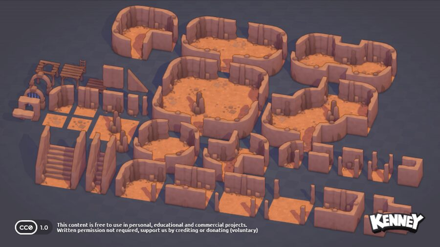
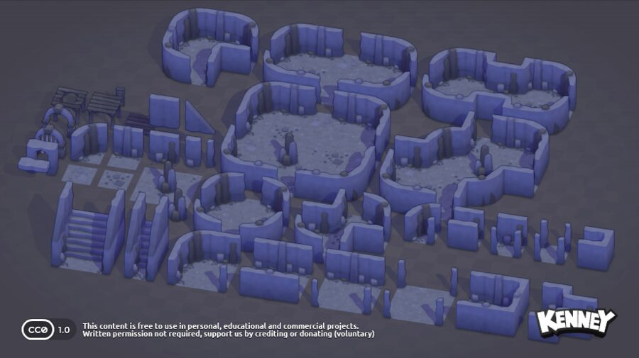
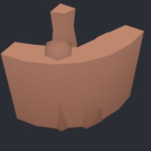
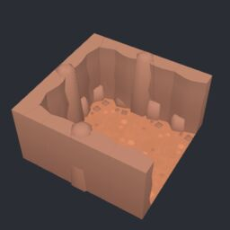
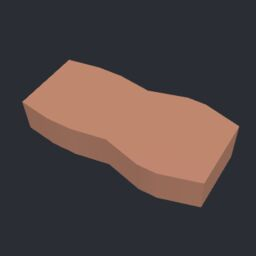
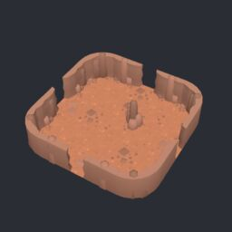
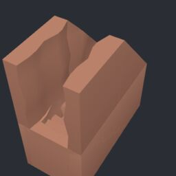
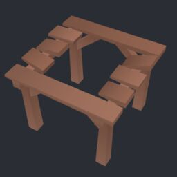
AG-KN-CAVE-0011 · corridor · glb · C
AG-KN-CAVE-0002 · corridor-end · glb · C
AG-KN-CAVE-0003 · corridor-intersection · glb · C
AG-KN-CAVE-0004 · corridor-junction · glb · C
AG-KN-CAVE-0005 · corridor-transition · glb · C
AG-KN-CAVE-0010 · corridor-wide · glb · C
AG-KN-CAVE-0006 · corridor-wide-corner · glb · C
AG-KN-CAVE-0008 · corridor-wide-intersection · glb · C
AG-KN-CAVE-0009 · corridor-wide-junction · glb · C
AG-KN-CAVE-0015 · gate · glb · C
AG-KN-CAVE-0012 · gate-metal-bars · glb · C
AG-KN-CAVE-0014 · gate-rock · glb · C
AG-KN-CAVE-0016 · ladder · glb · C
AG-KN-CAVE-0017 · room-corner · glb · C
AG-KN-CAVE-0018 · room-large-variation · glb · C
AG-KN-CAVE-0021 · room-small · glb · C
AG-KN-CAVE-0020 · room-small-variation · glb · C
AG-KN-CAVE-0023 · room-wide · glb · C
AG-KN-CAVE-0022 · room-wide-variation · glb · C
AG-KN-CAVE-0024 · stairs-wide · glb · C
AG-KN-CAVE-0026 · template-corner · glb · C
AG-KN-CAVE-0027 · template-detail · glb · C
AG-KN-CAVE-0034 · template-floor · glb · C
AG-KN-CAVE-0028 · template-floor-big · glb · C
AG-KN-CAVE-0030 · template-floor-detail · glb · C
AG-KN-CAVE-0029 · template-floor-detail-a · glb · C
AG-KN-CAVE-0033 · template-floor-layer · glb · C
AG-KN-CAVE-0032 · template-floor-layer-raised · glb · C
AG-KN-CAVE-0040 · template-wall · glb · C
AG-KN-CAVE-0035 · template-wall-corner · glb · C
AG-KN-CAVE-0036 · template-wall-detail-a · glb · C
AG-KN-CAVE-0037 · template-wall-half · glb · C
AG-KN-CAVE-0038 · template-wall-stairs · glb · C
AG-KN-CAVE-0039 · template-wall-top · glb · C
Kenney (kenney.nl) · CC0 1.0 Universal (Public Domain Dedication) · Kenney stylized low-poly; shared colormap atlas
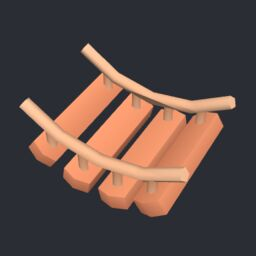
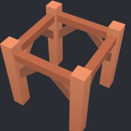
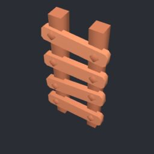
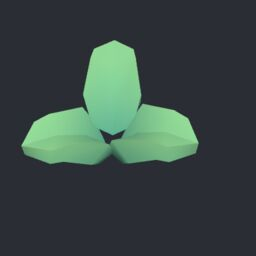
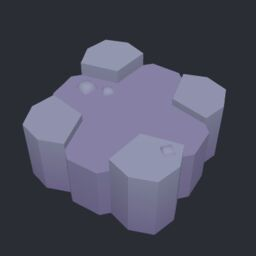
AG-KN-MINIFOR-0002 · building-platform · glb · C
AG-KN-MINIFOR-0003 · building-roof · glb · C
AG-KN-MINIFOR-0006 · fence · glb · C
AG-KN-MINIFOR-0007 · flag · glb · C
AG-KN-MINIFOR-0009 · patch-dirt · glb · C
AG-KN-MINIFOR-0010 · patch-grass · glb · C
AG-KN-MINIFOR-0012 · platform · glb · C
AG-KN-MINIFOR-0013 · rocks-high · glb · C
AG-KN-MINIFOR-0015 · rocks-ramp · glb · C
AG-KN-MINIFOR-0016 · stones · glb · C
AG-KN-MINIFOR-0018 · tent · glb · C
AG-KN-MINIFOR-0020 · tree · glb · C
AG-KN-MINIFOR-0019 · tree-high · glb · C
AG-KN-MINIFOR-0021 · weapon-arrow · glb · C
AG-KN-MINIFOR-0022 · weapon-bow · glb · C
Kenney (kenney.nl) · CC0 1.0 Universal (Public Domain Dedication) · Kenney stylized low-poly; shared colormap atlas
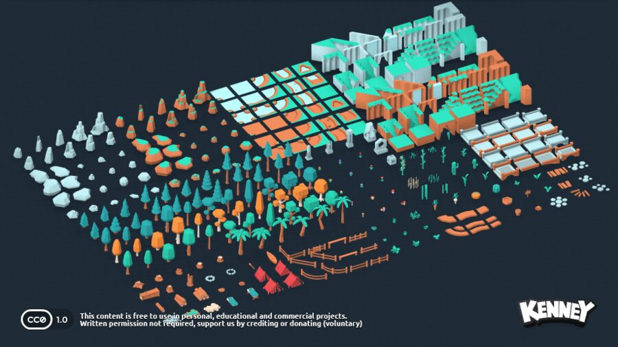
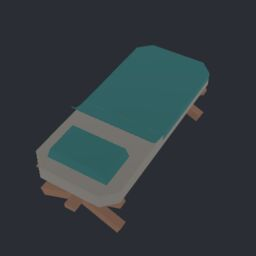
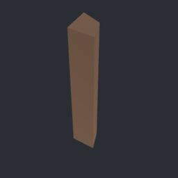
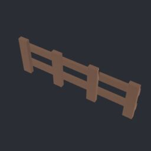
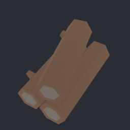
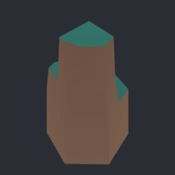
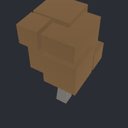
AG-KN-NATURE-0002 · bed_floor · glb · C
AG-KN-NATURE-0003 · bridge_center_stone · glb · C
AG-KN-NATURE-0004 · bridge_center_stoneRound · glb · C
AG-KN-NATURE-0005 · bridge_center_wood · glb · C
AG-KN-NATURE-0006 · bridge_center_woodRound · glb · C
AG-KN-NATURE-0007 · bridge_side_stone · glb · C
AG-KN-NATURE-0008 · bridge_side_stoneRound · glb · C
AG-KN-NATURE-0009 · bridge_side_wood · glb · C
AG-KN-NATURE-0010 · bridge_side_woodRound · glb · C
AG-KN-NATURE-0011 · bridge_stone · glb · C
AG-KN-NATURE-0012 · bridge_stoneNarrow · glb · C
AG-KN-NATURE-0013 · bridge_stoneRound · glb · C
AG-KN-NATURE-0014 · bridge_stoneRoundNarrow · glb · C
AG-KN-NATURE-0015 · bridge_wood · glb · C
AG-KN-NATURE-0016 · bridge_woodNarrow · glb · C
AG-KN-NATURE-0017 · bridge_woodRound · glb · C
AG-KN-NATURE-0018 · bridge_woodRoundNarrow · glb · C
AG-KN-NATURE-0019 · cactus_short · glb · C
AG-KN-NATURE-0020 · cactus_tall · glb · C
AG-KN-NATURE-0021 · campfire_bricks · glb · C
AG-KN-NATURE-0022 · campfire_logs · glb · C
AG-KN-NATURE-0023 · campfire_planks · glb · C
AG-KN-NATURE-0024 · campfire_stones · glb · C
AG-KN-NATURE-0025 · canoe · glb · C
AG-KN-NATURE-0026 · canoe_paddle · glb · C
AG-KN-NATURE-0027 · cliff_blockCave_rock · glb · C
AG-KN-NATURE-0028 · cliff_blockCave_stone · glb · C
AG-KN-NATURE-0029 · cliff_blockDiagonal_rock · glb · C
AG-KN-NATURE-0030 · cliff_blockDiagonal_stone · glb · C
AG-KN-NATURE-0031 · cliff_blockHalf_rock · glb · C
AG-KN-NATURE-0032 · cliff_blockHalf_stone · glb · C
AG-KN-NATURE-0033 · cliff_blockQuarter_rock · glb · C
AG-KN-NATURE-0034 · cliff_blockQuarter_stone · glb · C
AG-KN-NATURE-0035 · cliff_blockSlopeHalfWalls_rock · glb · C
AG-KN-NATURE-0036 · cliff_blockSlopeHalfWalls_stone · glb · C
AG-KN-NATURE-0037 · cliff_blockSlopeWalls_rock · glb · C
AG-KN-NATURE-0038 · cliff_blockSlopeWalls_stone · glb · C
AG-KN-NATURE-0039 · cliff_blockSlope_rock · glb · C
AG-KN-NATURE-0040 · cliff_blockSlope_stone · glb · C
AG-KN-NATURE-0041 · cliff_block_rock · glb · C
AG-KN-NATURE-0042 · cliff_block_stone · glb · C
AG-KN-NATURE-0043 · cliff_cave_rock · glb · C
AG-KN-NATURE-0044 · cliff_cave_stone · glb · C
AG-KN-NATURE-0045 · cliff_cornerInnerLarge_rock · glb · C
AG-KN-NATURE-0046 · cliff_cornerInnerLarge_stone · glb · C
AG-KN-NATURE-0047 · cliff_cornerInnerTop_rock · glb · C
AG-KN-NATURE-0048 · cliff_cornerInnerTop_stone · glb · C
AG-KN-NATURE-0049 · cliff_cornerInner_rock · glb · C
AG-KN-NATURE-0050 · cliff_cornerInner_stone · glb · C
AG-KN-NATURE-0051 · cliff_cornerLarge_rock · glb · C
AG-KN-NATURE-0052 · cliff_cornerLarge_stone · glb · C
AG-KN-NATURE-0053 · cliff_cornerTop_rock · glb · C
AG-KN-NATURE-0054 · cliff_cornerTop_stone · glb · C
AG-KN-NATURE-0056 · cliff_corner_stone · glb · C
AG-KN-NATURE-0057 · cliff_diagonal_rock · glb · C
AG-KN-NATURE-0058 · cliff_diagonal_stone · glb · C
AG-KN-NATURE-0059 · cliff_halfCornerInner_rock · glb · C
AG-KN-NATURE-0060 · cliff_halfCornerInner_stone · glb · C
AG-KN-NATURE-0061 · cliff_halfCorner_rock · glb · C
AG-KN-NATURE-0062 · cliff_halfCorner_stone · glb · C
AG-KN-NATURE-0063 · cliff_half_rock · glb · C
AG-KN-NATURE-0064 · cliff_half_stone · glb · C
AG-KN-NATURE-0065 · cliff_large_rock · glb · C
AG-KN-NATURE-0066 · cliff_large_stone · glb · C
AG-KN-NATURE-0067 · cliff_rock · glb · C
AG-KN-NATURE-0068 · cliff_stepsCornerInner_rock · glb · C
AG-KN-NATURE-0069 · cliff_stepsCornerInner_stone · glb · C
AG-KN-NATURE-0070 · cliff_stepsCorner_rock · glb · C
AG-KN-NATURE-0071 · cliff_stepsCorner_stone · glb · C
AG-KN-NATURE-0072 · cliff_steps_rock · glb · C
AG-KN-NATURE-0073 · cliff_steps_stone · glb · C
AG-KN-NATURE-0074 · cliff_stone · glb · C
AG-KN-NATURE-0075 · cliff_topDiagonal_rock · glb · C
AG-KN-NATURE-0076 · cliff_topDiagonal_stone · glb · C
AG-KN-NATURE-0077 · cliff_top_rock · glb · C
AG-KN-NATURE-0078 · cliff_top_stone · glb · C
AG-KN-NATURE-0079 · cliff_waterfallTop_rock · glb · C
AG-KN-NATURE-0080 · cliff_waterfallTop_stone · glb · C
AG-KN-NATURE-0081 · cliff_waterfall_rock · glb · C
AG-KN-NATURE-0082 · cliff_waterfall_stone · glb · C
AG-KN-NATURE-0083 · crop_carrot · glb · C
AG-KN-NATURE-0084 · crop_melon · glb · C
AG-KN-NATURE-0085 · crop_pumpkin · glb · C
AG-KN-NATURE-0086 · crop_turnip · glb · C
AG-KN-NATURE-0087 · crops_bambooStageA · glb · C
AG-KN-NATURE-0088 · crops_bambooStageB · glb · C
AG-KN-NATURE-0089 · crops_cornStageA · glb · C
AG-KN-NATURE-0090 · crops_cornStageB · glb · C
AG-KN-NATURE-0091 · crops_cornStageC · glb · C
AG-KN-NATURE-0092 · crops_cornStageD · glb · C
AG-KN-NATURE-0093 · crops_dirtDoubleRow · glb · C
AG-KN-NATURE-0094 · crops_dirtDoubleRowCorner · glb · C
AG-KN-NATURE-0095 · crops_dirtDoubleRowEnd · glb · C
AG-KN-NATURE-0096 · crops_dirtRow · glb · C
AG-KN-NATURE-0097 · crops_dirtRowCorner · glb · C
AG-KN-NATURE-0098 · crops_dirtRowEnd · glb · C
AG-KN-NATURE-0099 · crops_dirtSingle · glb · C
AG-KN-NATURE-0100 · crops_leafsStageA · glb · C
AG-KN-NATURE-0101 · crops_leafsStageB · glb · C
AG-KN-NATURE-0102 · crops_wheatStageA · glb · C
AG-KN-NATURE-0103 · crops_wheatStageB · glb · C
AG-KN-NATURE-0104 · fence_bend · glb · C
AG-KN-NATURE-0105 · fence_bendCenter · glb · C
AG-KN-NATURE-0106 · fence_corner · glb · C
AG-KN-NATURE-0107 · fence_gate · glb · C
AG-KN-NATURE-0108 · fence_planks · glb · C
AG-KN-NATURE-0110 · fence_simple · glb · C
AG-KN-NATURE-0111 · fence_simpleCenter · glb · C
AG-KN-NATURE-0112 · fence_simpleDiagonal · glb · C
AG-KN-NATURE-0113 · fence_simpleDiagonalCenter · glb · C
AG-KN-NATURE-0114 · fence_simpleHigh · glb · C
AG-KN-NATURE-0115 · fence_simpleLow · glb · C
AG-KN-NATURE-0116 · flower_purpleA · glb · C
AG-KN-NATURE-0117 · flower_purpleB · glb · C
AG-KN-NATURE-0118 · flower_purpleC · glb · C
AG-KN-NATURE-0119 · flower_redA · glb · C
AG-KN-NATURE-0120 · flower_redB · glb · C
AG-KN-NATURE-0121 · flower_redC · glb · C
AG-KN-NATURE-0122 · flower_yellowA · glb · C
AG-KN-NATURE-0123 · flower_yellowB · glb · C
AG-KN-NATURE-0124 · flower_yellowC · glb · C
AG-KN-NATURE-0125 · grass · glb · C
AG-KN-NATURE-0126 · grass_large · glb · C
AG-KN-NATURE-0127 · grass_leafs · glb · C
AG-KN-NATURE-0128 · grass_leafsLarge · glb · C
AG-KN-NATURE-0129 · ground_grass · glb · C
AG-KN-NATURE-0130 · ground_pathBend · glb · C
AG-KN-NATURE-0131 · ground_pathBendBank · glb · C
AG-KN-NATURE-0132 · ground_pathCorner · glb · C
AG-KN-NATURE-0133 · ground_pathCornerSmall · glb · C
AG-KN-NATURE-0134 · ground_pathCross · glb · C
AG-KN-NATURE-0135 · ground_pathEnd · glb · C
AG-KN-NATURE-0136 · ground_pathEndClosed · glb · C
AG-KN-NATURE-0137 · ground_pathOpen · glb · C
AG-KN-NATURE-0138 · ground_pathRocks · glb · C
AG-KN-NATURE-0139 · ground_pathSide · glb · C
AG-KN-NATURE-0140 · ground_pathSideOpen · glb · C
AG-KN-NATURE-0141 · ground_pathSplit · glb · C
AG-KN-NATURE-0142 · ground_pathStraight · glb · C
AG-KN-NATURE-0143 · ground_pathTile · glb · C
AG-KN-NATURE-0144 · ground_riverBend · glb · C
AG-KN-NATURE-0145 · ground_riverBendBank · glb · C
AG-KN-NATURE-0146 · ground_riverCorner · glb · C
AG-KN-NATURE-0147 · ground_riverCornerSmall · glb · C
AG-KN-NATURE-0148 · ground_riverCross · glb · C
AG-KN-NATURE-0149 · ground_riverEnd · glb · C
AG-KN-NATURE-0150 · ground_riverEndClosed · glb · C
AG-KN-NATURE-0151 · ground_riverOpen · glb · C
AG-KN-NATURE-0152 · ground_riverRocks · glb · C
AG-KN-NATURE-0153 · ground_riverSide · glb · C
AG-KN-NATURE-0154 · ground_riverSideOpen · glb · C
AG-KN-NATURE-0155 · ground_riverSplit · glb · C
AG-KN-NATURE-0156 · ground_riverStraight · glb · C
AG-KN-NATURE-0157 · ground_riverTile · glb · C
AG-KN-NATURE-0158 · hanging_moss · glb · C
AG-KN-NATURE-0159 · lily_large · glb · C
AG-KN-NATURE-0160 · lily_small · glb · C
AG-KN-NATURE-0161 · log · glb · C
AG-KN-NATURE-0162 · log_large · glb · C
AG-KN-NATURE-0164 · log_stackLarge · glb · C
AG-KN-NATURE-0165 · mushroom_red · glb · C
AG-KN-NATURE-0166 · mushroom_redGroup · glb · C
AG-KN-NATURE-0167 · mushroom_redTall · glb · C
AG-KN-NATURE-0168 · mushroom_tan · glb · C
AG-KN-NATURE-0169 · mushroom_tanGroup · glb · C
AG-KN-NATURE-0170 · mushroom_tanTall · glb · C
AG-KN-NATURE-0171 · path_stone · glb · C
AG-KN-NATURE-0172 · path_stoneCircle · glb · C
AG-KN-NATURE-0173 · path_stoneCorner · glb · C
AG-KN-NATURE-0174 · path_stoneEnd · glb · C
AG-KN-NATURE-0175 · path_wood · glb · C
AG-KN-NATURE-0176 · path_woodCorner · glb · C
AG-KN-NATURE-0177 · path_woodEnd · glb · C
AG-KN-NATURE-0178 · plant_bush · glb · C
AG-KN-NATURE-0179 · plant_bushDetailed · glb · C
AG-KN-NATURE-0180 · plant_bushLarge · glb · C
AG-KN-NATURE-0181 · plant_bushLargeTriangle · glb · C
AG-KN-NATURE-0182 · plant_bushSmall · glb · C
AG-KN-NATURE-0183 · plant_bushTriangle · glb · C
AG-KN-NATURE-0184 · plant_flatShort · glb · C
AG-KN-NATURE-0185 · plant_flatTall · glb · C
AG-KN-NATURE-0186 · platform_beach · glb · C
AG-KN-NATURE-0187 · platform_grass · glb · C
AG-KN-NATURE-0188 · platform_stone · glb · C
AG-KN-NATURE-0189 · pot_large · glb · C
AG-KN-NATURE-0190 · pot_small · glb · C
AG-KN-NATURE-0191 · rock_largeA · glb · C
AG-KN-NATURE-0192 · rock_largeB · glb · C
AG-KN-NATURE-0193 · rock_largeC · glb · C
AG-KN-NATURE-0194 · rock_largeD · glb · C
AG-KN-NATURE-0195 · rock_largeE · glb · C
AG-KN-NATURE-0196 · rock_largeF · glb · C
AG-KN-NATURE-0197 · rock_smallA · glb · C
AG-KN-NATURE-0198 · rock_smallB · glb · C
AG-KN-NATURE-0199 · rock_smallC · glb · C
AG-KN-NATURE-0200 · rock_smallD · glb · C
AG-KN-NATURE-0201 · rock_smallE · glb · C
AG-KN-NATURE-0202 · rock_smallF · glb · C
AG-KN-NATURE-0203 · rock_smallFlatA · glb · C
AG-KN-NATURE-0204 · rock_smallFlatB · glb · C
AG-KN-NATURE-0205 · rock_smallFlatC · glb · C
AG-KN-NATURE-0206 · rock_smallG · glb · C
AG-KN-NATURE-0207 · rock_smallH · glb · C
AG-KN-NATURE-0208 · rock_smallI · glb · C
AG-KN-NATURE-0209 · rock_smallTopA · glb · C
AG-KN-NATURE-0210 · rock_smallTopB · glb · C
AG-KN-NATURE-0211 · rock_tallA · glb · C
AG-KN-NATURE-0212 · rock_tallB · glb · C
AG-KN-NATURE-0213 · rock_tallC · glb · C
AG-KN-NATURE-0214 · rock_tallD · glb · C
AG-KN-NATURE-0215 · rock_tallE · glb · C
AG-KN-NATURE-0216 · rock_tallF · glb · C
AG-KN-NATURE-0218 · rock_tallH · glb · C
AG-KN-NATURE-0219 · rock_tallI · glb · C
AG-KN-NATURE-0220 · rock_tallJ · glb · C
AG-KN-NATURE-0221 · sign · glb · C
AG-KN-NATURE-0222 · statue_block · glb · C
AG-KN-NATURE-0223 · statue_column · glb · C
AG-KN-NATURE-0224 · statue_columnDamaged · glb · C
AG-KN-NATURE-0225 · statue_head · glb · C
AG-KN-NATURE-0226 · statue_obelisk · glb · C
AG-KN-NATURE-0227 · statue_ring · glb · C
AG-KN-NATURE-0228 · stone_largeA · glb · C
AG-KN-NATURE-0229 · stone_largeB · glb · C
AG-KN-NATURE-0230 · stone_largeC · glb · C
AG-KN-NATURE-0231 · stone_largeD · glb · C
AG-KN-NATURE-0232 · stone_largeE · glb · C
AG-KN-NATURE-0233 · stone_largeF · glb · C
AG-KN-NATURE-0234 · stone_smallA · glb · C
AG-KN-NATURE-0235 · stone_smallB · glb · C
AG-KN-NATURE-0236 · stone_smallC · glb · C
AG-KN-NATURE-0237 · stone_smallD · glb · C
AG-KN-NATURE-0238 · stone_smallE · glb · C
AG-KN-NATURE-0239 · stone_smallF · glb · C
AG-KN-NATURE-0240 · stone_smallFlatA · glb · C
AG-KN-NATURE-0241 · stone_smallFlatB · glb · C
AG-KN-NATURE-0242 · stone_smallFlatC · glb · C
AG-KN-NATURE-0243 · stone_smallG · glb · C
AG-KN-NATURE-0244 · stone_smallH · glb · C
AG-KN-NATURE-0245 · stone_smallI · glb · C
AG-KN-NATURE-0246 · stone_smallTopA · glb · C
AG-KN-NATURE-0247 · stone_smallTopB · glb · C
AG-KN-NATURE-0248 · stone_tallA · glb · C
AG-KN-NATURE-0249 · stone_tallB · glb · C
AG-KN-NATURE-0250 · stone_tallC · glb · C
AG-KN-NATURE-0251 · stone_tallD · glb · C
AG-KN-NATURE-0252 · stone_tallE · glb · C
AG-KN-NATURE-0253 · stone_tallF · glb · C
AG-KN-NATURE-0254 · stone_tallG · glb · C
AG-KN-NATURE-0255 · stone_tallH · glb · C
AG-KN-NATURE-0256 · stone_tallI · glb · C
AG-KN-NATURE-0257 · stone_tallJ · glb · C
AG-KN-NATURE-0258 · stump_old · glb · C
AG-KN-NATURE-0259 · stump_oldTall · glb · C
AG-KN-NATURE-0260 · stump_round · glb · C
AG-KN-NATURE-0261 · stump_roundDetailed · glb · C
AG-KN-NATURE-0262 · stump_square · glb · C
AG-KN-NATURE-0263 · stump_squareDetailed · glb · C
AG-KN-NATURE-0264 · stump_squareDetailedWide · glb · C
AG-KN-NATURE-0265 · tent_detailedClosed · glb · C
AG-KN-NATURE-0266 · tent_detailedOpen · glb · C
AG-KN-NATURE-0267 · tent_smallClosed · glb · C
AG-KN-NATURE-0268 · tent_smallOpen · glb · C
AG-KN-NATURE-0269 · tree_blocks · glb · C
AG-KN-NATURE-0270 · tree_blocks_dark · glb · C
AG-KN-NATURE-0272 · tree_cone · glb · C
AG-KN-NATURE-0273 · tree_cone_dark · glb · C
AG-KN-NATURE-0274 · tree_cone_fall · glb · C
AG-KN-NATURE-0275 · tree_default · glb · C
AG-KN-NATURE-0276 · tree_default_dark · glb · C
AG-KN-NATURE-0277 · tree_default_fall · glb · C
AG-KN-NATURE-0278 · tree_detailed · glb · C
AG-KN-NATURE-0279 · tree_detailed_dark · glb · C
AG-KN-NATURE-0280 · tree_detailed_fall · glb · C
AG-KN-NATURE-0281 · tree_fat · glb · C
AG-KN-NATURE-0282 · tree_fat_darkh · glb · C
AG-KN-NATURE-0283 · tree_fat_fall · glb · C
AG-KN-NATURE-0284 · tree_oak · glb · C
AG-KN-NATURE-0285 · tree_oak_dark · glb · C
AG-KN-NATURE-0286 · tree_oak_fall · glb · C
AG-KN-NATURE-0287 · tree_palm · glb · C
AG-KN-NATURE-0288 · tree_palmBend · glb · C
AG-KN-NATURE-0289 · tree_palmDetailedShort · glb · C
AG-KN-NATURE-0290 · tree_palmDetailedTall · glb · C
AG-KN-NATURE-0291 · tree_palmShort · glb · C
AG-KN-NATURE-0292 · tree_palmTall · glb · C
AG-KN-NATURE-0293 · tree_pineDefaultA · glb · C
AG-KN-NATURE-0294 · tree_pineDefaultB · glb · C
AG-KN-NATURE-0295 · tree_pineGroundA · glb · C
AG-KN-NATURE-0296 · tree_pineGroundB · glb · C
AG-KN-NATURE-0297 · tree_pineRoundA · glb · C
AG-KN-NATURE-0298 · tree_pineRoundB · glb · C
AG-KN-NATURE-0299 · tree_pineRoundC · glb · C
AG-KN-NATURE-0300 · tree_pineRoundD · glb · C
AG-KN-NATURE-0301 · tree_pineRoundE · glb · C
AG-KN-NATURE-0302 · tree_pineRoundF · glb · C
AG-KN-NATURE-0303 · tree_pineSmallA · glb · C
AG-KN-NATURE-0304 · tree_pineSmallB · glb · C
AG-KN-NATURE-0305 · tree_pineSmallC · glb · C
AG-KN-NATURE-0306 · tree_pineSmallD · glb · C
AG-KN-NATURE-0307 · tree_pineTallA · glb · C
AG-KN-NATURE-0308 · tree_pineTallA_detailed · glb · C
AG-KN-NATURE-0309 · tree_pineTallB · glb · C
AG-KN-NATURE-0310 · tree_pineTallB_detailed · glb · C
AG-KN-NATURE-0311 · tree_pineTallC · glb · C
AG-KN-NATURE-0312 · tree_pineTallC_detailed · glb · C
AG-KN-NATURE-0313 · tree_pineTallD · glb · C
AG-KN-NATURE-0314 · tree_pineTallD_detailed · glb · C
AG-KN-NATURE-0315 · tree_plateau · glb · C
AG-KN-NATURE-0316 · tree_plateau_dark · glb · C
AG-KN-NATURE-0317 · tree_plateau_fall · glb · C
AG-KN-NATURE-0318 · tree_simple · glb · C
AG-KN-NATURE-0319 · tree_simple_dark · glb · C
AG-KN-NATURE-0320 · tree_simple_fall · glb · C
AG-KN-NATURE-0321 · tree_small · glb · C
AG-KN-NATURE-0322 · tree_small_dark · glb · C
AG-KN-NATURE-0323 · tree_small_fall · glb · C
AG-KN-NATURE-0324 · tree_tall · glb · C
AG-KN-NATURE-0325 · tree_tall_dark · glb · C
AG-KN-NATURE-0326 · tree_tall_fall · glb · C
AG-KN-NATURE-0327 · tree_thin · glb · C
AG-KN-NATURE-0328 · tree_thin_dark · glb · C
AG-KN-NATURE-0329 · tree_thin_fall · glb · C
loafbrr1 (OpenGameArt user) · CC0 1.0 Universal (Public Domain Dedication) · Community low-poly (mixed style)
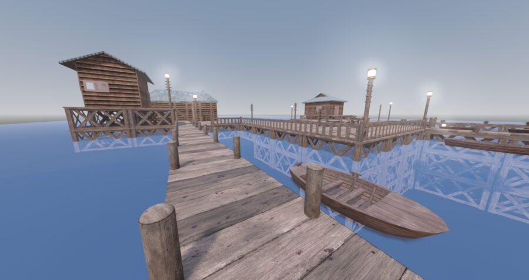
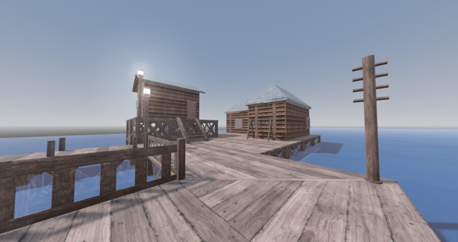


AG-OGA-DOCKS-0002 · Boat_A_2 · fbx · C
AG-OGA-DOCKS-0003 · Boat_A_3 · fbx · C
AG-OGA-DOCKS-0004 · Boat_B_1 · fbx · C
AG-OGA-DOCKS-0005 · Boat_B_2 · fbx · C
AG-OGA-DOCKS-0006 · Boat_B_3 · fbx · C
AG-OGA-DOCKS-0007 · Boat_Stand · fbx · C
AG-OGA-DOCKS-0008 · Dock_Bollard_1 · fbx · C
AG-OGA-DOCKS-0009 · Dock_Bollard_2 · fbx · C
AG-OGA-DOCKS-0010 · Dock_Bollard_3 · fbx · C
AG-OGA-DOCKS-0011 · Dock_Bollard_Half_1 · fbx · C
AG-OGA-DOCKS-0012 · Dock_Bollard_Half_2 · fbx · C
AG-OGA-DOCKS-0013 · Fence_Plane · fbx · C
AG-OGA-DOCKS-0014 · Fence_Plane_Half · fbx · C
AG-OGA-DOCKS-0015 · Fence_Post · fbx · C
AG-OGA-DOCKS-0016 · Floor_Corner · fbx · C
AG-OGA-DOCKS-0017 · Floor_Dock · fbx · C
AG-OGA-DOCKS-0018 · Floor_Dock_End · fbx · C
AG-OGA-DOCKS-0019 · Floor_Dock_End_Half · fbx · C
AG-OGA-DOCKS-0020 · Floor_Dock_Half · fbx · C
AG-OGA-DOCKS-0021 · Floor_Floor · fbx · C
AG-OGA-DOCKS-0022 · Floor_Half_1 · fbx · C
AG-OGA-DOCKS-0023 · Floor_Half_2 · fbx · C
AG-OGA-DOCKS-0025 · Floor_Quarter_Corner · fbx · C
AG-OGA-DOCKS-0026 · Floor_Side_Boards · fbx · C
AG-OGA-DOCKS-0027 · Floor_Side_Boards_Half · fbx · C
AG-OGA-DOCKS-0028 · Floor_Side_Plank · fbx · C
AG-OGA-DOCKS-0029 · Floor_Side_Plank_Half · fbx · C
AG-OGA-DOCKS-0030 · Floor_Support · fbx · C
AG-OGA-DOCKS-0031 · Floor_Support_Half · fbx · C
AG-OGA-DOCKS-0032 · Floor_Support_Half_VHalf · fbx · C
AG-OGA-DOCKS-0033 · Floor_Support_Quarter · fbx · C
AG-OGA-DOCKS-0034 · Floor_Support_Quarter_VHalf · fbx · C
AG-OGA-DOCKS-0035 · Floor_Support_VHalf · fbx · C
AG-OGA-DOCKS-0036 · Harpoon_1 · fbx · C
AG-OGA-DOCKS-0037 · Harpoon_2 · fbx · C
AG-OGA-DOCKS-0038 · Lantern_Body · fbx · C
AG-OGA-DOCKS-0039 · Lantern_Frame · fbx · C
AG-OGA-DOCKS-0040 · Lantern_Lamp · fbx · C
AG-OGA-DOCKS-0041 · Paddle_1 · fbx · C
AG-OGA-DOCKS-0042 · Paddle_2 · fbx · C
AG-OGA-DOCKS-0043 · Paddle_3 · fbx · C
AG-OGA-DOCKS-0044 · Post · fbx · C
AG-OGA-DOCKS-0045 · Props_Barrel · fbx · C
AG-OGA-DOCKS-0046 · Props_Bed_1 · fbx · C
AG-OGA-DOCKS-0048 · Props_Bench · fbx · C
AG-OGA-DOCKS-0049 · Props_Box · fbx · C
AG-OGA-DOCKS-0050 · Props_Chair · fbx · C
AG-OGA-DOCKS-0051 · Props_Crate · fbx · C
AG-OGA-DOCKS-0052 · Props_Fish_1 · fbx · C
AG-OGA-DOCKS-0053 · Props_Fish_2 · fbx · C
AG-OGA-DOCKS-0054 · Props_Rack · fbx · C
AG-OGA-DOCKS-0055 · Props_Rack_Fish · fbx · C
AG-OGA-DOCKS-0056 · Props_Shelf_1 · fbx · C
AG-OGA-DOCKS-0057 · Props_Shelf_2 · fbx · C
AG-OGA-DOCKS-0058 · Props_Stool · fbx · C
AG-OGA-DOCKS-0059 · Props_Stool_Round · fbx · C
AG-OGA-DOCKS-0060 · Props_Stool_Small · fbx · C
AG-OGA-DOCKS-0061 · Props_Table_1 · fbx · C
AG-OGA-DOCKS-0062 · Props_Table_2 · fbx · C
AG-OGA-DOCKS-0063 · Props_Table_3 · fbx · C
AG-OGA-DOCKS-0064 · Props_Table_4 · fbx · C
AG-OGA-DOCKS-0065 · Props_Table_Round · fbx · C
AG-OGA-DOCKS-0066 · Roof_A · fbx · C
AG-OGA-DOCKS-0067 · Roof_A_Corner_Inner_Edge · fbx · C
AG-OGA-DOCKS-0068 · Roof_A_Corner_Inner_Half_1 · fbx · C
AG-OGA-DOCKS-0069 · Roof_A_Corner_Inner_Half_2 · fbx · C
AG-OGA-DOCKS-0071 · Roof_A_Corner_Outer_Edge · fbx · C
AG-OGA-DOCKS-0072 · Roof_A_Edge · fbx · C
AG-OGA-DOCKS-0073 · Roof_A_Plane · fbx · C
AG-OGA-DOCKS-0074 · Roof_A_Plane_Side_1 · fbx · C
AG-OGA-DOCKS-0075 · Roof_A_Plane_Side_2 · fbx · C
AG-OGA-DOCKS-0076 · Roof_A_Ridge · fbx · C
AG-OGA-DOCKS-0077 · Roof_A_Side_1 · fbx · C
AG-OGA-DOCKS-0078 · Roof_A_Side_1_Edge · fbx · C
AG-OGA-DOCKS-0079 · Roof_A_Side_1_Ridge · fbx · C
AG-OGA-DOCKS-0080 · Roof_A_Side_2 · fbx · C
AG-OGA-DOCKS-0081 · Roof_A_Side_2_Edge · fbx · C
AG-OGA-DOCKS-0082 · Roof_A_Side_2_Ridge · fbx · C
AG-OGA-DOCKS-0083 · Roof_B · fbx · C
AG-OGA-DOCKS-0084 · Roof_B_Corner_Inner_Edge · fbx · C
AG-OGA-DOCKS-0085 · Roof_B_Corner_Inner_Half_1 · fbx · C
AG-OGA-DOCKS-0086 · Roof_B_Corner_Inner_Half_2 · fbx · C
AG-OGA-DOCKS-0087 · Roof_B_Corner_Outer · fbx · C
AG-OGA-DOCKS-0088 · Roof_B_Corner_Outer_Edge · fbx · C
AG-OGA-DOCKS-0089 · Roof_B_Edge · fbx · C
AG-OGA-DOCKS-0090 · Roof_B_Plane · fbx · C
AG-OGA-DOCKS-0091 · Roof_B_Plane_Side_1 · fbx · C
AG-OGA-DOCKS-0092 · Roof_B_Plane_Side_2 · fbx · C
AG-OGA-DOCKS-0094 · Roof_B_Side_1 · fbx · C
AG-OGA-DOCKS-0095 · Roof_B_Side_1_Edge · fbx · C
AG-OGA-DOCKS-0096 · Roof_B_Side_1_Ridge · fbx · C
AG-OGA-DOCKS-0097 · Roof_B_Side_2 · fbx · C
AG-OGA-DOCKS-0098 · Roof_B_Side_2_Edge · fbx · C
AG-OGA-DOCKS-0099 · Roof_B_Side_2_Ridge · fbx · C
AG-OGA-DOCKS-0100 · RopeSegment · fbx · C
AG-OGA-DOCKS-0101 · Rope_Coil.001 · fbx · C
AG-OGA-DOCKS-0102 · Stairs_A · fbx · C
AG-OGA-DOCKS-0103 · Stairs_A_Support_1 · fbx · C
AG-OGA-DOCKS-0104 · Stairs_A_Support_2 · fbx · C
AG-OGA-DOCKS-0105 · Stairs_B · fbx · C
AG-OGA-DOCKS-0106 · Stairs_B_Support · fbx · C
AG-OGA-DOCKS-0107 · Support_Block_1 · fbx · C
AG-OGA-DOCKS-0108 · Support_Block_1_half · fbx · C
AG-OGA-DOCKS-0109 · Support_Block_2 · fbx · C
AG-OGA-DOCKS-0110 · Support_Block_2_half · fbx · C
AG-OGA-DOCKS-0111 · Support_Plane · fbx · C
AG-OGA-DOCKS-0112 · Support_Plane_Half · fbx · C
AG-OGA-DOCKS-0113 · Support_Planes_1 · fbx · C
AG-OGA-DOCKS-0114 · Support_Planes_1_Half · fbx · C
AG-OGA-DOCKS-0115 · Support_Planes_2 · fbx · C
AG-OGA-DOCKS-0117 · Support_Post · fbx · C
AG-OGA-DOCKS-0118 · Support_Post_Half · fbx · C
AG-OGA-DOCKS-0119 · Wall_Beam_Plane · fbx · C
AG-OGA-DOCKS-0120 · Wall_Corner_Ext · fbx · C
AG-OGA-DOCKS-0121 · Wall_Corner_Int · fbx · C
AG-OGA-DOCKS-0122 · Wall_Door_1 · fbx · C
AG-OGA-DOCKS-0123 · Wall_Door_2 · fbx · C
AG-OGA-DOCKS-0124 · Wall_Door_3 · fbx · C
AG-OGA-DOCKS-0125 · Wall_Door_4 · fbx · C
AG-OGA-DOCKS-0126 · Wall_Pillar_Plane · fbx · C
AG-OGA-DOCKS-0127 · Wall_Roof_A · fbx · C
AG-OGA-DOCKS-0128 · Wall_Roof_A_Tri · fbx · C
AG-OGA-DOCKS-0129 · Wall_Roof_B · fbx · C
AG-OGA-DOCKS-0130 · Wall_Roof_B_Tri · fbx · C
AG-OGA-DOCKS-0131 · Wall_Wall · fbx · C
AG-OGA-DOCKS-0132 · Wall_Window_1 · fbx · C
AG-OGA-DOCKS-0133 · Wall_Window_2 · fbx · C
AG-OGA-DOCKS-0134 · Wall_Window_3 · fbx · C
AG-OGA-DOCKS-0135 · Wall_Window_4 · fbx · C
AG-OGA-DOCKS-0136 · Walls_Beams_Ext · fbx · C
AG-OGA-DOCKS-0137 · Walls_Beams_Int · fbx · C
AG-OGA-DOCKS-0138 · Walls_Pillar_Ext · fbx · C
AG-OGA-DOCKS-0139 · Walls_Pillar_Int · fbx · C
AG-OGA-DOCKS-0140 · WoodenDockSet · glb · C
cheb-gonaz (OpenGameArt user) · CC0 1.0 Universal (Public Domain Dedication) · Community low-poly (mixed style)
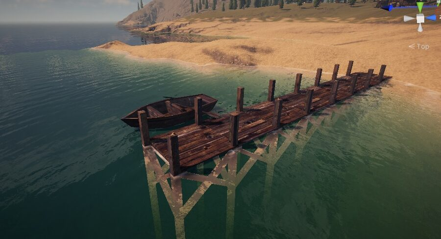
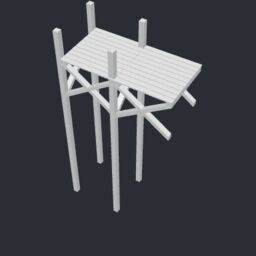
Poly Haven contributors · CC0 1.0 Universal (Public Domain Dedication) · Photoreal PBR (not stylized)
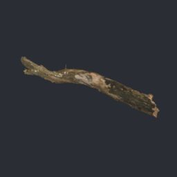
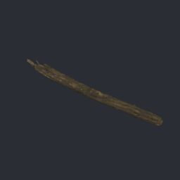
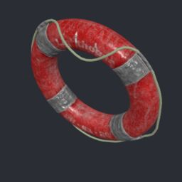
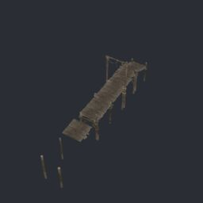
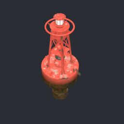
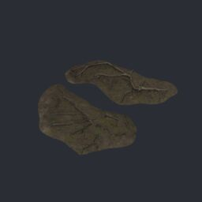
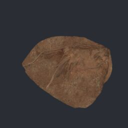
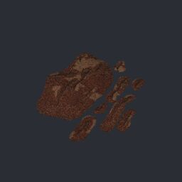
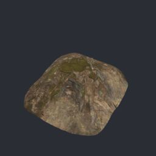
Quaternius · CC0 1.0 Universal (Public Domain Dedication) · Quaternius stylized low-poly
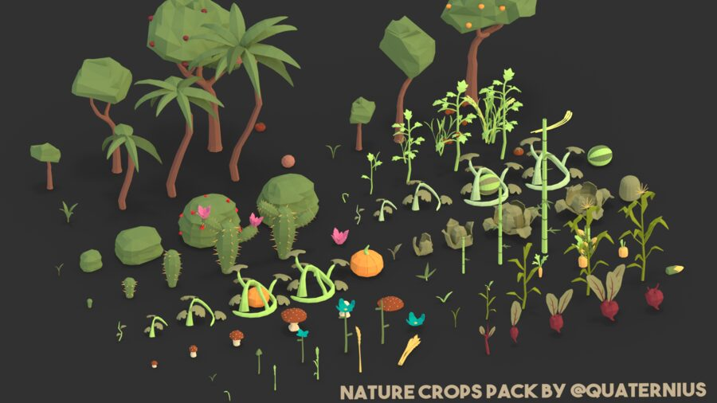
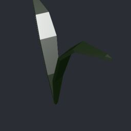
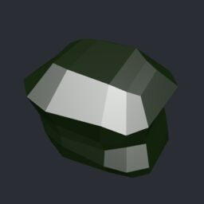
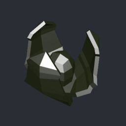
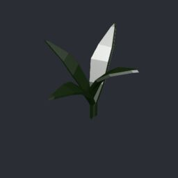
AG-QT-CROPS-0002 · Apple_2 · fbx · C
AG-QT-CROPS-0003 · Apple_3 · fbx · C
AG-QT-CROPS-0004 · Apple_4 · fbx · C
AG-QT-CROPS-0005 · Apple_Crop · fbx · C
AG-QT-CROPS-0006 · Apple_Harvested · fbx · C
AG-QT-CROPS-0007 · Bamboo_1 · fbx · C
AG-QT-CROPS-0008 · Bamboo_2 · fbx · C
AG-QT-CROPS-0009 · Bamboo_3 · fbx · C
AG-QT-CROPS-0010 · Bamboo_4 · fbx · C
AG-QT-CROPS-0011 · Bamboo_Crop · fbx · C
AG-QT-CROPS-0012 · Beet_1 · fbx · C
AG-QT-CROPS-0013 · Beet_2 · fbx · C
AG-QT-CROPS-0014 · Beet_3 · fbx · C
AG-QT-CROPS-0015 · Beet_4 · fbx · C
AG-QT-CROPS-0016 · Beet_Crop · fbx · C
AG-QT-CROPS-0017 · BushBerries_1 · fbx · C
AG-QT-CROPS-0019 · BushBerries_3 · fbx · C
AG-QT-CROPS-0020 · BushBerries_4 · fbx · C
AG-QT-CROPS-0021 · BushBerries_Crop · fbx · C
AG-QT-CROPS-0022 · BushBerries_Harvested · fbx · C
AG-QT-CROPS-0023 · Cactus_1 · fbx · C
AG-QT-CROPS-0024 · Cactus_2 · fbx · C
AG-QT-CROPS-0025 · Cactus_3 · fbx · C
AG-QT-CROPS-0026 · Cactus_4 · fbx · C
AG-QT-CROPS-0027 · Cactus_Crop · fbx · C
AG-QT-CROPS-0028 · Cactus_Harvested · fbx · C
AG-QT-CROPS-0029 · Carrot_1 · fbx · C
AG-QT-CROPS-0030 · Carrot_2 · fbx · C
AG-QT-CROPS-0031 · Carrot_3 · fbx · C
AG-QT-CROPS-0032 · Carrot_4 · fbx · C
AG-QT-CROPS-0033 · Carrot_Crop · fbx · C
AG-QT-CROPS-0034 · Coconut_Half · fbx · C
AG-QT-CROPS-0036 · Corn_2 · fbx · C
AG-QT-CROPS-0037 · Corn_3 · fbx · C
AG-QT-CROPS-0038 · Corn_4 · fbx · C
AG-QT-CROPS-0039 · Corn_Crop · fbx · C
AG-QT-CROPS-0040 · Corn_Harvested · fbx · C
AG-QT-CROPS-0041 · Flower_1 · fbx · C
AG-QT-CROPS-0042 · Flower_2 · fbx · C
AG-QT-CROPS-0043 · Flower_3 · fbx · C
AG-QT-CROPS-0044 · Flower_4 · fbx · C
AG-QT-CROPS-0045 · Flowers_Crop · fbx · C
AG-QT-CROPS-0046 · Flowers_Harvested · fbx · C
AG-QT-CROPS-0047 · Grass_1 · fbx · C
AG-QT-CROPS-0048 · Grass_2 · fbx · C
AG-QT-CROPS-0049 · Grass_3 · fbx · C
AG-QT-CROPS-0050 · Grass_4 · fbx · C
AG-QT-CROPS-0051 · Lettuce_1 · fbx · C
AG-QT-CROPS-0053 · Lettuce_3 · fbx · C
AG-QT-CROPS-0054 · Lettuce_4 · fbx · C
AG-QT-CROPS-0055 · Lettuce_Crop · fbx · C
AG-QT-CROPS-0056 · Lettuce_Harvested · fbx · C
AG-QT-CROPS-0057 · Mushroom_1 · fbx · C
AG-QT-CROPS-0058 · Mushroom_2 · fbx · C
AG-QT-CROPS-0059 · Mushroom_3 · fbx · C
AG-QT-CROPS-0060 · Mushroom_4 · fbx · C
AG-QT-CROPS-0061 · Mushroom_Crop · fbx · C
AG-QT-CROPS-0062 · Mushroom_Harvested · fbx · C
AG-QT-CROPS-0063 · Orange_1 · fbx · C
AG-QT-CROPS-0064 · Orange_2 · fbx · C
AG-QT-CROPS-0065 · Orange_3 · fbx · C
AG-QT-CROPS-0066 · Orange_4 · fbx · C
AG-QT-CROPS-0067 · Orange_Crop · fbx · C
AG-QT-CROPS-0068 · Orange_Harvested · fbx · C
AG-QT-CROPS-0070 · PalmTree_2 · fbx · C
AG-QT-CROPS-0071 · PalmTree_3 · fbx · C
AG-QT-CROPS-0072 · PalmTree_4 · fbx · C
AG-QT-CROPS-0073 · PalmTree_Crop · fbx · C
AG-QT-CROPS-0074 · PalmTree_Harvested · fbx · C
AG-QT-CROPS-0075 · Pumpkin_1 · fbx · C
AG-QT-CROPS-0076 · Pumpkin_2 · fbx · C
AG-QT-CROPS-0077 · Pumpkin_3 · fbx · C
AG-QT-CROPS-0078 · Pumpkin_4 · fbx · C
AG-QT-CROPS-0079 · Pumpkin_Crop · fbx · C
AG-QT-CROPS-0080 · Pumpkin_Harvested · fbx · C
AG-QT-CROPS-0081 · Rice_1 · fbx · C
AG-QT-CROPS-0082 · Rice_2 · fbx · C
AG-QT-CROPS-0083 · Rice_3 · fbx · C
AG-QT-CROPS-0084 · Rice_4 · fbx · C
AG-QT-CROPS-0085 · Rice_Crop · fbx · C
AG-QT-CROPS-0087 · Tomato_2 · fbx · C
AG-QT-CROPS-0088 · Tomato_3 · fbx · C
AG-QT-CROPS-0089 · Tomato_4 · fbx · C
AG-QT-CROPS-0090 · Tomato_Crop · fbx · C
AG-QT-CROPS-0091 · Tomato_Harvested · fbx · C
AG-QT-CROPS-0092 · Watermelon_1 · fbx · C
AG-QT-CROPS-0093 · Watermelon_2 · fbx · C
AG-QT-CROPS-0094 · Watermelon_3 · fbx · C
AG-QT-CROPS-0095 · Watermelon_4 · fbx · C
AG-QT-CROPS-0096 · Watermelon_Crop · fbx · C
AG-QT-CROPS-0097 · Watermelon_Harvested · fbx · C
AG-QT-CROPS-0098 · Wheat_1 · fbx · C
AG-QT-CROPS-0099 · Wheat_2 · fbx · C
AG-QT-CROPS-0100 · Wheat_3 · fbx · C
AG-QT-CROPS-0101 · Wheat_4 · fbx · C
AG-QT-CROPS-0102 · Wheat_Crop · fbx · C
Quaternius · CC0 1.0 Universal (Public Domain Dedication) · Quaternius stylized low-poly
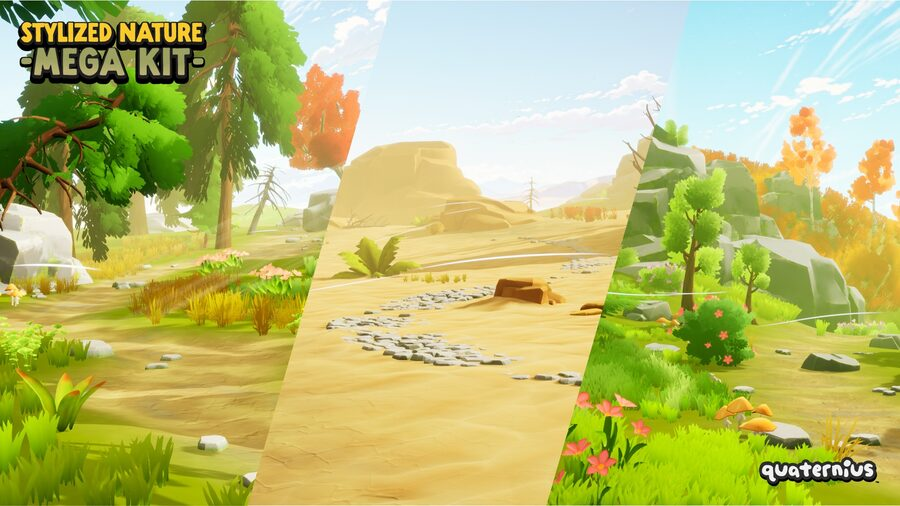
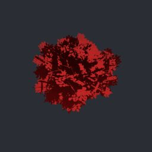
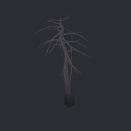
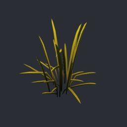
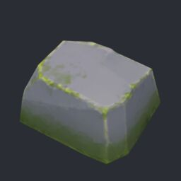
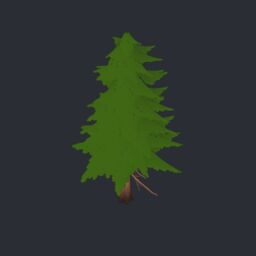
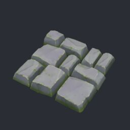
AG-QT-NATMEGA-0002 · Bush_Common_Flowers · gltf · C
AG-QT-NATMEGA-0003 · Clover_1 · gltf · C
AG-QT-NATMEGA-0004 · Clover_2 · gltf · C
AG-QT-NATMEGA-0005 · CommonTree_1 · gltf · C
AG-QT-NATMEGA-0006 · CommonTree_2 · gltf · C
AG-QT-NATMEGA-0007 · CommonTree_3 · gltf · C
AG-QT-NATMEGA-0008 · CommonTree_4 · gltf · C
AG-QT-NATMEGA-0009 · CommonTree_5 · gltf · C
AG-QT-NATMEGA-0010 · DeadTree_1 · gltf · C
AG-QT-NATMEGA-0011 · DeadTree_2 · gltf · C
AG-QT-NATMEGA-0013 · DeadTree_4 · gltf · C
AG-QT-NATMEGA-0014 · DeadTree_5 · gltf · C
AG-QT-NATMEGA-0015 · Fern_1 · gltf · C
AG-QT-NATMEGA-0016 · Flower_3_Group · gltf · C
AG-QT-NATMEGA-0017 · Flower_3_Single · gltf · C
AG-QT-NATMEGA-0018 · Flower_4_Group · gltf · C
AG-QT-NATMEGA-0019 · Flower_4_Single · gltf · C
AG-QT-NATMEGA-0020 · Grass_Common_Short · gltf · C
AG-QT-NATMEGA-0021 · Grass_Common_Tall · gltf · C
AG-QT-NATMEGA-0022 · Grass_Wispy_Short · gltf · C
AG-QT-NATMEGA-0024 · Mushroom_Common · gltf · C
AG-QT-NATMEGA-0025 · Mushroom_Laetiporus · gltf · C
AG-QT-NATMEGA-0026 · Pebble_Round_1 · gltf · C
AG-QT-NATMEGA-0027 · Pebble_Round_2 · gltf · C
AG-QT-NATMEGA-0028 · Pebble_Round_3 · gltf · C
AG-QT-NATMEGA-0029 · Pebble_Round_4 · gltf · C
AG-QT-NATMEGA-0030 · Pebble_Round_5 · gltf · C
AG-QT-NATMEGA-0031 · Pebble_Square_1 · gltf · C
AG-QT-NATMEGA-0032 · Pebble_Square_2 · gltf · C
AG-QT-NATMEGA-0033 · Pebble_Square_3 · gltf · C
AG-QT-NATMEGA-0035 · Pebble_Square_5 · gltf · C
AG-QT-NATMEGA-0036 · Pebble_Square_6 · gltf · C
AG-QT-NATMEGA-0037 · Petal_1 · gltf · C
AG-QT-NATMEGA-0038 · Petal_2 · gltf · C
AG-QT-NATMEGA-0039 · Petal_3 · gltf · C
AG-QT-NATMEGA-0040 · Petal_4 · gltf · C
AG-QT-NATMEGA-0041 · Petal_5 · gltf · C
AG-QT-NATMEGA-0042 · Pine_1 · gltf · C
AG-QT-NATMEGA-0043 · Pine_2 · gltf · C
AG-QT-NATMEGA-0044 · Pine_3 · gltf · C
AG-QT-NATMEGA-0046 · Pine_5 · gltf · C
AG-QT-NATMEGA-0047 · Plant_1 · gltf · C
AG-QT-NATMEGA-0048 · Plant_1_Big · gltf · C
AG-QT-NATMEGA-0049 · Plant_7 · gltf · C
AG-QT-NATMEGA-0050 · Plant_7_Big · gltf · C
AG-QT-NATMEGA-0051 · RockPath_Round_Small_1 · gltf · C
AG-QT-NATMEGA-0052 · RockPath_Round_Small_2 · gltf · C
AG-QT-NATMEGA-0053 · RockPath_Round_Small_3 · gltf · C
AG-QT-NATMEGA-0054 · RockPath_Round_Thin · gltf · C
AG-QT-NATMEGA-0055 · RockPath_Round_Wide · gltf · C
AG-QT-NATMEGA-0057 · RockPath_Square_Small_2 · gltf · C
AG-QT-NATMEGA-0058 · RockPath_Square_Small_3 · gltf · C
AG-QT-NATMEGA-0059 · RockPath_Square_Thin · gltf · C
AG-QT-NATMEGA-0060 · RockPath_Square_Wide · gltf · C
AG-QT-NATMEGA-0061 · Rock_Medium_1 · gltf · C
AG-QT-NATMEGA-0062 · Rock_Medium_2 · gltf · C
AG-QT-NATMEGA-0063 · Rock_Medium_3 · gltf · C
AG-QT-NATMEGA-0064 · TwistedTree_1 · gltf · C
AG-QT-NATMEGA-0065 · TwistedTree_2 · gltf · C
AG-QT-NATMEGA-0066 · TwistedTree_3 · gltf · C
AG-QT-NATMEGA-0067 · TwistedTree_4 · gltf · C
AG-QT-NATMEGA-0068 · TwistedTree_5 · gltf · C
Quaternius · CC0 1.0 Universal (Public Domain Dedication) · Quaternius stylized low-poly
AG-QT-NATURE-0002 · BirchTree_2 · fbx · C
AG-QT-NATURE-0003 · BirchTree_3 · fbx · C
AG-QT-NATURE-0004 · BirchTree_4 · fbx · C
AG-QT-NATURE-0005 · BirchTree_5 · fbx · C
AG-QT-NATURE-0006 · BirchTree_Autumn_1 · fbx · C
AG-QT-NATURE-0007 · BirchTree_Autumn_2 · fbx · C
AG-QT-NATURE-0008 · BirchTree_Autumn_3 · fbx · C
AG-QT-NATURE-0009 · BirchTree_Autumn_4 · fbx · C
AG-QT-NATURE-0010 · BirchTree_Autumn_5 · fbx · C
AG-QT-NATURE-0011 · BirchTree_Dead_1 · fbx · C
AG-QT-NATURE-0012 · BirchTree_Dead_2 · fbx · C
AG-QT-NATURE-0013 · BirchTree_Dead_3 · fbx · C
AG-QT-NATURE-0014 · BirchTree_Dead_4 · fbx · C
AG-QT-NATURE-0015 · BirchTree_Dead_5 · fbx · C
AG-QT-NATURE-0016 · BirchTree_Dead_Snow_1 · fbx · C
AG-QT-NATURE-0017 · BirchTree_Dead_Snow_2 · fbx · C
AG-QT-NATURE-0018 · BirchTree_Dead_Snow_3 · fbx · C
AG-QT-NATURE-0019 · BirchTree_Dead_Snow_4 · fbx · C
AG-QT-NATURE-0020 · BirchTree_Dead_Snow_5 · fbx · C
AG-QT-NATURE-0021 · BirchTree_Snow_1 · fbx · C
AG-QT-NATURE-0022 · BirchTree_Snow_2 · fbx · C
AG-QT-NATURE-0023 · BirchTree_Snow_3 · fbx · C
AG-QT-NATURE-0024 · BirchTree_Snow_4 · fbx · C
AG-QT-NATURE-0025 · BirchTree_Snow_5 · fbx · C
AG-QT-NATURE-0027 · BushBerries_2 · fbx · C
AG-QT-NATURE-0028 · Bush_1 · fbx · C
AG-QT-NATURE-0029 · Bush_2 · fbx · C
AG-QT-NATURE-0030 · Bush_Snow_1 · fbx · C
AG-QT-NATURE-0031 · Bush_Snow_2 · fbx · C
AG-QT-NATURE-0032 · CactusFlower_1 · fbx · C
AG-QT-NATURE-0033 · CactusFlowers_2 · fbx · C
AG-QT-NATURE-0034 · CactusFlowers_3 · fbx · C
AG-QT-NATURE-0035 · CactusFlowers_4 · fbx · C
AG-QT-NATURE-0036 · CactusFlowers_5 · fbx · C
AG-QT-NATURE-0037 · Cactus_1 · fbx · C
AG-QT-NATURE-0038 · Cactus_2 · fbx · C
AG-QT-NATURE-0039 · Cactus_3 · fbx · C
AG-QT-NATURE-0040 · Cactus_4 · fbx · C
AG-QT-NATURE-0041 · Cactus_5 · fbx · C
AG-QT-NATURE-0042 · CommonTree_1 · fbx · C
AG-QT-NATURE-0043 · CommonTree_2 · fbx · C
AG-QT-NATURE-0044 · CommonTree_3 · fbx · C
AG-QT-NATURE-0045 · CommonTree_4 · fbx · C
AG-QT-NATURE-0046 · CommonTree_5 · fbx · C
AG-QT-NATURE-0047 · CommonTree_Autumn_1 · fbx · C
AG-QT-NATURE-0048 · CommonTree_Autumn_2 · fbx · C
AG-QT-NATURE-0049 · CommonTree_Autumn_3 · fbx · C
AG-QT-NATURE-0050 · CommonTree_Autumn_4 · fbx · C
AG-QT-NATURE-0052 · CommonTree_Dead_1 · fbx · C
AG-QT-NATURE-0053 · CommonTree_Dead_2 · fbx · C
AG-QT-NATURE-0054 · CommonTree_Dead_3 · fbx · C
AG-QT-NATURE-0055 · CommonTree_Dead_4 · fbx · C
AG-QT-NATURE-0056 · CommonTree_Dead_5 · fbx · C
AG-QT-NATURE-0057 · CommonTree_Dead_Snow_1 · fbx · C
AG-QT-NATURE-0058 · CommonTree_Dead_Snow_2 · fbx · C
AG-QT-NATURE-0059 · CommonTree_Dead_Snow_3 · fbx · C
AG-QT-NATURE-0060 · CommonTree_Dead_Snow_4 · fbx · C
AG-QT-NATURE-0061 · CommonTree_Dead_Snow_5 · fbx · C
AG-QT-NATURE-0062 · CommonTree_Snow_1 · fbx · C
AG-QT-NATURE-0063 · CommonTree_Snow_2 · fbx · C
AG-QT-NATURE-0064 · CommonTree_Snow_3 · fbx · C
AG-QT-NATURE-0065 · CommonTree_Snow_4 · fbx · C
AG-QT-NATURE-0066 · CommonTree_Snow_5 · fbx · C
AG-QT-NATURE-0067 · Corn_1 · fbx · C
AG-QT-NATURE-0068 · Corn_2 · fbx · C
AG-QT-NATURE-0069 · Flowers · fbx · C
AG-QT-NATURE-0070 · Grass · fbx · C
AG-QT-NATURE-0071 · Grass_2 · fbx · C
AG-QT-NATURE-0072 · Grass_Short · fbx · C
AG-QT-NATURE-0073 · Lilypad · fbx · C
AG-QT-NATURE-0074 · PalmTree_1 · fbx · C
AG-QT-NATURE-0075 · PalmTree_2 · fbx · C
AG-QT-NATURE-0077 · PalmTree_4 · fbx · C
AG-QT-NATURE-0078 · PineTree_1 · fbx · C
AG-QT-NATURE-0079 · PineTree_2 · fbx · C
AG-QT-NATURE-0080 · PineTree_3 · fbx · C
AG-QT-NATURE-0081 · PineTree_4 · fbx · C
AG-QT-NATURE-0082 · PineTree_5 · fbx · C
AG-QT-NATURE-0083 · PineTree_Autumn_1 · fbx · C
AG-QT-NATURE-0084 · PineTree_Autumn_2 · fbx · C
AG-QT-NATURE-0085 · PineTree_Autumn_3 · fbx · C
AG-QT-NATURE-0086 · PineTree_Autumn_4 · fbx · C
AG-QT-NATURE-0087 · PineTree_Autumn_5 · fbx · C
AG-QT-NATURE-0088 · PineTree_Snow_1 · fbx · C
AG-QT-NATURE-0089 · PineTree_Snow_2 · fbx · C
AG-QT-NATURE-0090 · PineTree_Snow_3 · fbx · C
AG-QT-NATURE-0091 · PineTree_Snow_4 · fbx · C
AG-QT-NATURE-0092 · PineTree_Snow_5 · fbx · C
AG-QT-NATURE-0093 · Plant_1 · fbx · C
AG-QT-NATURE-0094 · Plant_2 · fbx · C
AG-QT-NATURE-0095 · Plant_3 · fbx · C
AG-QT-NATURE-0096 · Plant_4 · fbx · C
AG-QT-NATURE-0097 · Plant_5 · fbx · C
AG-QT-NATURE-0098 · Rock_1 · fbx · C
AG-QT-NATURE-0099 · Rock_2 · fbx · C
AG-QT-NATURE-0100 · Rock_3 · fbx · C
AG-QT-NATURE-0102 · Rock_5 · fbx · C
AG-QT-NATURE-0103 · Rock_6 · fbx · C
AG-QT-NATURE-0104 · Rock_7 · fbx · C
AG-QT-NATURE-0105 · Rock_Moss_1 · fbx · C
AG-QT-NATURE-0106 · Rock_Moss_2 · fbx · C
AG-QT-NATURE-0107 · Rock_Moss_3 · fbx · C
AG-QT-NATURE-0108 · Rock_Moss_4 · fbx · C
AG-QT-NATURE-0109 · Rock_Moss_5 · fbx · C
AG-QT-NATURE-0110 · Rock_Moss_6 · fbx · C
AG-QT-NATURE-0111 · Rock_Moss_7 · fbx · C
AG-QT-NATURE-0112 · Rock_Snow_1 · fbx · C
AG-QT-NATURE-0113 · Rock_Snow_2 · fbx · C
AG-QT-NATURE-0114 · Rock_Snow_3 · fbx · C
AG-QT-NATURE-0115 · Rock_Snow_4 · fbx · C
AG-QT-NATURE-0116 · Rock_Snow_5 · fbx · C
AG-QT-NATURE-0117 · Rock_Snow_6 · fbx · C
AG-QT-NATURE-0118 · Rock_Snow_7 · fbx · C
AG-QT-NATURE-0119 · TreeStump · fbx · C
AG-QT-NATURE-0120 · TreeStump_Moss · fbx · C
AG-QT-NATURE-0121 · TreeStump_Snow · fbx · C
AG-QT-NATURE-0122 · Wheat · fbx · C
AG-QT-NATURE-0123 · Willow_1 · fbx · C
AG-QT-NATURE-0124 · Willow_2 · fbx · C
AG-QT-NATURE-0125 · Willow_3 · fbx · C
AG-QT-NATURE-0127 · Willow_5 · fbx · C
AG-QT-NATURE-0128 · Willow_Autumn_1 · fbx · C
AG-QT-NATURE-0129 · Willow_Autumn_2 · fbx · C
AG-QT-NATURE-0130 · Willow_Autumn_3 · fbx · C
AG-QT-NATURE-0131 · Willow_Autumn_4 · fbx · C
AG-QT-NATURE-0132 · Willow_Autumn_5 · fbx · C
AG-QT-NATURE-0133 · Willow_Dead_1 · fbx · C
AG-QT-NATURE-0134 · Willow_Dead_2 · fbx · C
AG-QT-NATURE-0135 · Willow_Dead_3 · fbx · C
AG-QT-NATURE-0136 · Willow_Dead_4 · fbx · C
AG-QT-NATURE-0137 · Willow_Dead_5 · fbx · C
AG-QT-NATURE-0138 · Willow_Dead_Snow_1 · fbx · C
AG-QT-NATURE-0139 · Willow_Dead_Snow_2 · fbx · C
AG-QT-NATURE-0140 · Willow_Dead_Snow_3 · fbx · C
AG-QT-NATURE-0141 · Willow_Dead_Snow_4 · fbx · C
AG-QT-NATURE-0142 · Willow_Dead_Snow_5 · fbx · C
AG-QT-NATURE-0143 · Willow_Snow_1 · fbx · C
AG-QT-NATURE-0144 · Willow_Snow_2 · fbx · C
AG-QT-NATURE-0145 · Willow_Snow_3 · fbx · C
AG-QT-NATURE-0146 · Willow_Snow_4 · fbx · C
AG-QT-NATURE-0147 · Willow_Snow_5 · fbx · C
AG-QT-NATURE-0148 · WoodLog · fbx · C
AG-QT-NATURE-0149 · WoodLog_Moss · fbx · C
AG-QT-NATURE-0150 · WoodLog_Snow · fbx · C
Quaternius · CC0 1.0 Universal (Public Domain Dedication) · Quaternius stylized low-poly
AG-QT-TREES-0002 · Birch_10 · fbx · C
AG-QT-TREES-0003 · Birch_2 · fbx · C
AG-QT-TREES-0004 · Birch_3 · fbx · C
AG-QT-TREES-0005 · Birch_4 · fbx · C
AG-QT-TREES-0006 · Birch_5 · fbx · C
AG-QT-TREES-0007 · Birch_6 · fbx · C
AG-QT-TREES-0009 · Birch_8 · fbx · C
AG-QT-TREES-0010 · Birch_9 · fbx · C
AG-QT-TREES-0011 · DeadBirch_1 · fbx · C
AG-QT-TREES-0012 · DeadBirch_10 · fbx · C
AG-QT-TREES-0013 · DeadBirch_2 · fbx · C
AG-QT-TREES-0014 · DeadBirch_3 · fbx · C
AG-QT-TREES-0016 · DeadBirch_5 · fbx · C
AG-QT-TREES-0017 · DeadBirch_6 · fbx · C
AG-QT-TREES-0018 · DeadBirch_7 · fbx · C
AG-QT-TREES-0019 · DeadBirch_8 · fbx · C
AG-QT-TREES-0020 · DeadBirch_9 · fbx · C
AG-QT-TREES-0021 · DeadTree_1 · fbx · C
AG-QT-TREES-0023 · DeadTree_2 · fbx · C
AG-QT-TREES-0024 · DeadTree_3 · fbx · C
AG-QT-TREES-0025 · DeadTree_4 · fbx · C
AG-QT-TREES-0026 · DeadTree_5 · fbx · C
AG-QT-TREES-0027 · DeadTree_6 · fbx · C
AG-QT-TREES-0028 · DeadTree_7 · fbx · C
AG-QT-TREES-0030 · DeadTree_9 · fbx · C
AG-QT-TREES-0031 · Pine_1 · fbx · C
AG-QT-TREES-0032 · Pine_2 · fbx · C
AG-QT-TREES-0033 · Pine_3 · fbx · C
AG-QT-TREES-0034 · Pine_4 · fbx · C
AG-QT-TREES-0035 · Pine_5 · fbx · C
AG-QT-TREES-0037 · Tree_10 · fbx · C
AG-QT-TREES-0038 · Tree_2 · fbx · C
AG-QT-TREES-0039 · Tree_3 · fbx · C
AG-QT-TREES-0040 · Tree_4 · fbx · C
AG-QT-TREES-0041 · Tree_5 · fbx · C
AG-QT-TREES-0042 · Tree_6 · fbx · C
AG-QT-TREES-0043 · Tree_7 · fbx · C
AG-QT-TREES-0044 · Tree_8 · fbx · C
AG-QT-TREES-0045 · Tree_9 · fbx · C